Research article · methods, findings & evidence
When proximity
is not interception.
Getting close is not the same as stopping a car. In simulations on fifteen urban road networks, the rule used to count a capture changes both the success rate and which strategy appears to work best.
Universidad Panamericana · Rice University
Author manuscript · October 2026 · not yet published
Companion data archive: DOI pending. Availability details
The contribution
Three findings. One question:
what does a capture score measure?
Close is not captured.
A team that does not pursue still scores 33.2 % under a 5 m body-gap rule, versus 3.1 % under operational capture.
Compare the endpoints → 02 / Containment“Enclosed” can be wrong.
Most evaders certified by the junction-level indicator escape. Checking individual lanes helps, but does not guarantee containment.
Audit the indicators → 03 / ControlWaiting ahead helps.
Predictive lane blocking beats chasing by +14.5 and +6.4 percentage points on two separate held-out sets.
Inspect the held-out results →The contribution is an audit of measurement, with a planning baseline evaluated under it. Getting ahead of a vehicle is established prior work; these experiments do not establish effectiveness in real vehicles.
The question
What counts as a capture?
We scored the same episodes under two kinds of rule, in the SUMO traffic simulator on the road networks of fifteen real downtowns.
A proximity rule
A capture at the first instant a distance falls to a threshold, usually 5 m. Which distance is part of the rule: between bodies, between centres, or between front bumpers.
It asks nothing about speed, direction or duration.
Operational capture
One pursuer directly ahead of the evader, with a gap of 0.3 to 2 m between the two bodies, both nearly stopped, facing the same way, the evader in file behind.
Held for 2 s, without interruption, by one and the same pursuer.
Three situations, three verdicts
Each condition of the second rule lights up when it holds. The capture needs all of them at once, for two seconds.
Experimental design
Real street geometries.
Controlled simulation.
Fifteen downtown networks from OpenStreetMap. Four cities for training, three for development, and two separate sets of four reserved for evaluation.
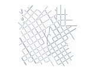
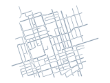
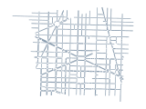
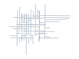
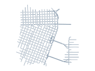
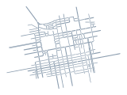
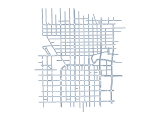
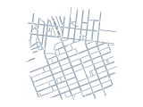
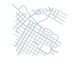
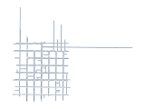
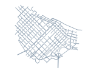
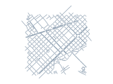
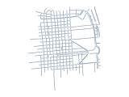
Network outlines generated from the distributed SUMO files; each is independently scaled. These are simulations on real road geometries, not field trials. © OpenStreetMap contributors, ODbL.
Protocol, uncertainty and evaluation scope
Training cities were used for parameter selection. Development cities informed design decisions. TEST was opened once after methods were frozen. HELD-OUT B cities were registered before map download and evaluated once. Both sets are now spent.
Comparisons are paired by scenario and simulator seed. Intervals resample scenario families, keeping related team-size cells together. A family is a city, a scenario and an evader behaviour. Primary held-out contrasts use 97.5 % intervals; other displayed intervals use 95 % unless labelled otherwise. Four cities per held-out set limit inference to other cities.
“Optimal” is the name of a greedy scripted evader, not a global optimum. Five evader behaviours are studied overall; the primary comparison pools avoidant and random evaders. Registration is internal, with hashes and amendments, not an externally timestamped registry. Inspect the contracts and analysis →
Proximity is not interception
Records & analysis ↗The simplest check of a capture rule is to score a team that is not trying.
The same episodes, two verdicts
On cities that the methods had never seen, the team that chases is scored as successful – times as often by a 5 m rule as by an operational stop on the first set of four, and – times on the second.
In the released code of two published methods
To check that these rules are not a straw man, we ran the official environments of two published pursuit methods, unmodified, and looked at every capture event.
The rule decides which controller wins
Compare two controllers: one waits ahead of the evader, the other chases. Scored by operational capture, waiting ahead wins by about twelve points on three independent sets of scenarios. Scored by proximity, the advantage vanishes under one rule and reverses under the other.
One scenario, two teams
Central Adelaide: same start positions, same evader, same simulator seed. With pursuit, the 5 m rule stops the clock half a minute in, and the evader drives on for the rest of the episode. With pursuers that wait ahead, it is stopped.
Pursuit Five pursuers chase
Predictive lane blocking Five pursuers wait ahead
Is the stricter rule any better?
We audited it the same way. Each capture was simulated again with every pursuer held in place, for a full minute.
Zero observed escapes is not a guarantee, and the probe shows why. Operational capture measures close stopping behind a pursuer. It does not prove that escape is impossible, and it needs no rear blocker. If controllers keep re-planning after capture, 8–14 % of evaders are later released: the zero-escape hold result depends on keeping the pursuers stopped. Audit records →
"Enclosed" needs auditing too
Records & analysis ↗A containment indicator labels an evader as enclosed during an episode. We test whether that label predicts what happens next. We followed every certified evader for a minute.
Waiting ahead beats chasing
Records & analysis ↗Under the audited rule, pursuers that wait in the lanes the evader is predicted to take capture more than pursuers that chase.
How it works
The planner predicts the path of the evader: at each junction, the exit that takes it farthest ahead of the nearest pursuer. If the team can reach every exit lane of a junction in time, it closes the junction. If it cannot, the pursuers that are free drive ahead and wait in the lanes of the predicted exits, one lane each. Those that can reach no lane chase.
- 1
Predict. At each junction, the exit that takes the evader farthest ahead of the nearest pursuer. Here: straight through J1, then north at J2.
- 2
Wait ahead. Free pursuers stop in the lanes of the predicted exits of the next one or two junctions, one lane each, never a lane a teammate took. If the whole team can reach every exit lane of a junction in time, it closes that junction instead.
- 3
Chase. A pursuer that can reach no lane in time chases. The plan is recomputed every second.
Across evaders, kinematics and traffic
The estimated advantage over pursuit is positive in every condition shown. Its size is not stable: on the second held-out set it is less than half of that on the first, and we did not identify why.
By evader and team size
Share of episodes that end in an operational capture. “Optimal” names a scripted evader that chooses among all exits by a local distance rule, not a globally optimal adversary. The junction ambush is the simpler planner that only closes a junction when the whole team is in time. On HELD-OUT B, PLB’s advantage over that simpler planner was not established: +2.4 points (95 % interval −1.7 to +6.4). Its advantage over pursuit remains positive. Sources and comparisons →
Assignment matters
A registered ablation keeps the same prediction, the same information and the same rule for each pursuer, and removes the team: no joint closing of a junction, and each pursuer picks its lane without knowing which lanes its teammates took.
What did not help
A controller cloned from the planner and then fine-tuned by multi-agent reinforcement learning showed no statistically supported improvement over its imitation start at the tested budgets, across three successive implementations. Audits found defects in the training code of the first two; with both corrected, the outcome did not change.
Limits
What this does not show
One simulator
SUMO moves vehicles along lanes. It has no tyre or steering dynamics, and its drivers do not ram, mount kerbs or drive against traffic. Two other kinematic models and background traffic were checked inside it; that is not a second simulator or field data.
Scripted evaders
Five behaviours, one of them tuned against the controller. A stronger evader may exist. Learned evaders were not evaluated, and reversing and U-turns in mid-street were not simulated, which favours blocking.
A fallible endpoint
Operational capture admits slow following behind a pursuer and needs no rear blocker. It is a better question than proximity, not a proof of containment.
Eight held-out cities
Two sets of four, each evaluated once and not pooled. The advantage differs between them. Registration was internal, through sealed packages with checksums, not an external registry.
The published environments
Audited as released, which is not as reported; the published learners were not trained; both come from one research group.
Our own earlier work
An earlier study of ours scored captures with a 20 m rule against a static prey. It is an instance of what this audit examines.
Evidence
Check it yourself
Open the complete review guide ↗The repository preserves sealed result packages, the research code and available historical source archives, alongside an independently implemented library. Some launch-time source versions are not fully recoverable. Integrity, numerical recomputation and simulator replay are separate checks. See the verification scope →
Verify, in seconds
Expected packages, unchanged seals and file checksums. Only explicitly listed companion-file omissions are allowed. No simulator needed.
git clone https://github.com/Andnog/pursuit-capture-audit.git cd pursuit-capture-audit && uv sync uv run pursuit-audit verifyRecompute, in a minute
The headline results, from the raw per-episode records, with code that is independent of the code that ran. – of – agree with the sealed values to the last stored digit.
uv run pursuit-audit recompute uv run pytestThe tests compare the library with the judge and the planners of the study, on tens of thousands of random situations.
Replay, in minutes
Sealed episodes, again, in SUMO 1.21. Six of six came out identical from the public copy.
cd as_run && uv sync --extra learning uv run python scripts/preflight.py uv run python scripts/audit_d06_persistence.py --package /tmp/replay --limit 6Run a study again
The catalogue identifies study scripts and registration records; it also includes post hoc analyses and demonstrations. The instructions give the command for every one of them.
Score your own study
The library scores any episode under several capture rules at once. It needs only Python.
import pursuit_audit as pa
frames = pa.load_trace("episode.jsonl")
row = pa.score_trace(frames, evader="e1") # every rule, one row
capture = pa.operational_capture(frames, evader="e1")
print(capture.captured, capture.closest_failure)Six things a pursuit study can report at low cost: the capture rule in full; the score of a team that does not pursue; what the evader does after a capture; the escape share of any containment indicator; an evaluation on unseen networks, opened once; and which analyses were registered before the runs.